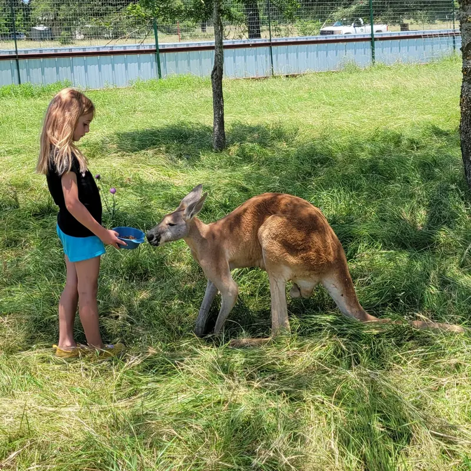

Ride a Camel and Feed a Kangaroo at the Camel Farm in Pipe Creek
Yes, there is a camel farm in the Texas Hill Country. Meet friendly camels, kangaroos, and water buffalo up close, then head home to a cabin at Al's Hideaway in the same town.
Check Availability & Book Your StayA Real Camel Farm, Right Here in Pipe Creek
Movieland Animals, run by Bill Rivers, is home to the Camel Farm at 288 River Bluff Lane in Pipe Creek. The goal is simple: an up-close, enjoyable experience with the animals for the whole family, young and old.
The animals here are friendly, and interacting with people is the rule, not the exception. Petting, feeding, and photo ops are the heart of a visit, and camel rides are part of the fun. Movieland Animals is USDA licensed and insured.
Good to know: Movieland Animals does not publish pricing, hours, or a booking page online. Call 210-478-8808 for pricing and details before you go.

Who You'll Meet at the Camel Farm
Camels are the stars, and they have some very unusual company for Texas.
Camels
Friendly one-humped dromedary camels you can pet, feed, and photograph. Camel rides are part of the experience, so call to confirm ride details.
Kangaroos
Feed and meet kangaroos, the world's largest marsupials, without leaving the Texas Hill Country.
Water Buffalo
Large animals with thick, swept-back horns. Movieland Animals also brings llamas and burros to private petting parties.
Photo Ops Everywhere
Petting, feeding, and photos with animals you do not see every day. Bring your phone.
Fun Facts From the Farm
A few things to look for on your visit.
The camels at the farm are dromedaries, the one-humped kind. The hump stores fat for energy, not water.
Camels have double rows of extra-long eyelashes and can close their nostrils to keep out sand.
A camel can go more than a week without water.
Kangaroos are the only large animals that hop as their main way of getting around, and they can reach speeds up to 40 mph.
How to Plan Your Camel Farm Visit
Three quick steps to build a weekend around it.
Call the Farm
Call Movieland Animals at 210-478-8808 for pricing, visiting details, and camel ride availability.
Book Your Stay With Us
Reserve a cabin, RV site, or cowboy campsite at Al's Hideaway. Book 2+ nights and use code FUN to save 10%.
Meet the Animals
Visit the farm at 288 River Bluff Lane in Pipe Creek, then come back to the pool, MeMaw's Country Store, and a campfire.
Make It an Animal Weekend in Pipe Creek
Pipe Creek is packed with animal experiences. Here is an easy way to fill your trip.
Pet, feed, and photograph the animals at Movieland Animals.
Sno cones, smoothies, and cooked food are on-site at Al's Hideaway.
Between October and May, add a private ranch visit with Highland cattle. See the Highland cow guide.
Grab firewood at the store and watch the Milky Way with no city noise.
More to explore: the full Texas Hill Country guide, our cabins, and RV sites and camping.
Bring the Animals to Your Event
Movieland Animals can bring animals to you for private parties, parades, festivals, and other special events, including petting parties and photo opportunities for your guests. Planning a wedding or celebration at Al's Hideaway? Call them at 210-478-8808 to ask about bringing camels to your event, and see our events and venue page for space and pricing.
Stay Where the Trip Really Happens
Al's Hideaway is a family-owned, pet-friendly retreat in Pipe Creek with no pet fees and no cleaning fees.

Real beds, A/C, and pets always free. See the cabins.

10 full-hookup RV sites and 9 cowboy campsites. See RV & camping.

Cool off after the farm and stock up at MeMaw's Country Store.